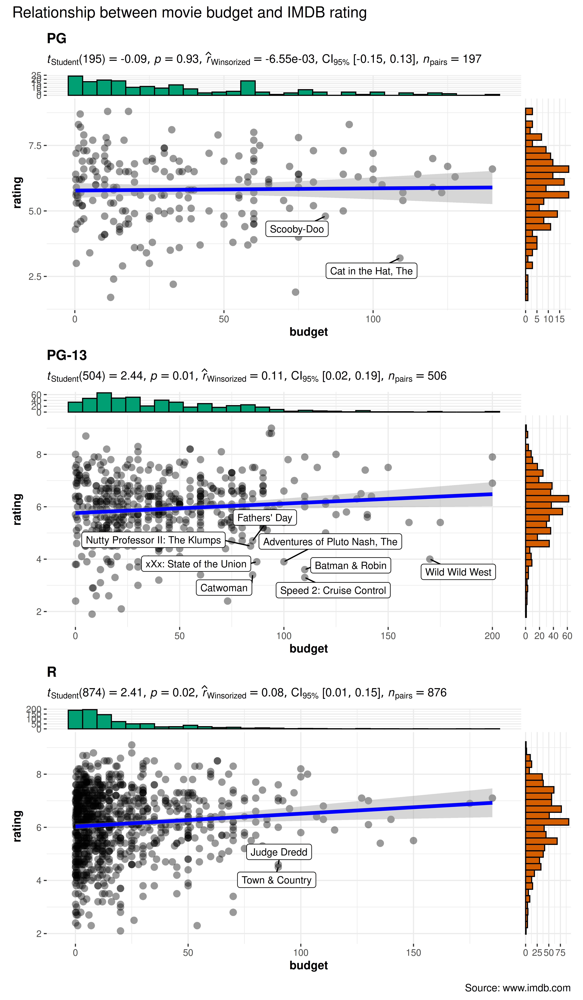

Lifecycle: 
The function ggscatterstats is meant to provide a
publication-ready scatterplot with all statistical
details included in the plot itself to show association between two
continuous variables. This function is also helpful during the
data exploration phase. We will see examples of how to
use this function in this vignette with the ggplot2movies
dataset.
To begin with, here are some instances where you would want to use
ggscatterstats-
- to check linear association between two continuous variables
- to check distribution of two continuous variables
Note before: The following demo uses the pipe
operator (%>%), so in case you are not familiar with
this operator, here is a good explanation: http://r4ds.had.co.nz/pipes.html
Correlation plot with ggscatterstats
To illustrate how this function can be used, we will rely on the
ggplot2movies dataset. This dataset provides information
about movies scraped from IMDB.
Specifically, we will be using cleaned version of this dataset included
in the ggstatsplot package itself.
## see the selected data (we have data from 1813 movies)
dplyr::glimpse(movies_long)
#> Rows: 1,579
#> Columns: 8
#> $ title <chr> "Shawshank Redemption, The", "Lord of the Rings: The Return of …
#> $ year <int> 1994, 2003, 2001, 2002, 1994, 1993, 1977, 1980, 1968, 2002, 196…
#> $ length <int> 142, 251, 208, 223, 168, 195, 125, 129, 158, 135, 93, 113, 108,…
#> $ budget <dbl> 25.0, 94.0, 93.0, 94.0, 8.0, 25.0, 11.0, 18.0, 5.0, 3.3, 1.8, 5…
#> $ rating <dbl> 9.1, 9.0, 8.8, 8.8, 8.8, 8.8, 8.8, 8.8, 8.7, 8.7, 8.7, 8.7, 8.6…
#> $ votes <int> 149494, 103631, 157608, 114797, 132745, 97667, 134640, 103706, …
#> $ mpaa <fct> R, PG-13, PG-13, PG-13, R, R, PG, PG, PG-13, R, PG, R, R, R, R,…
#> $ genre <fct> Drama, Action, Action, Action, Drama, Drama, Action, Action, Dr…Now that we have a clean dataset, we can start asking some interesting questions. For example, let’s see if the average IMDB rating for a movie has any relationship to its budget. Additionally, let’s also see which movies had a high budget but low IMDB rating by labeling those data points.
To reduce the processing time, let’s only work with 30% of the dataset.
ggscatterstats(
data = movies_long, ## data frame from which variables are taken
x = budget, ## predictor/independent variable
y = rating, ## dependent variable
xlab = "Budget (in millions of US dollars)", ## label for the x-axis
ylab = "Rating on IMDB", ## label for the y-axis
label.var = title, ## variable to use for labeling data points
label.expression = rating < 5 & budget > 100, ## expression for deciding which points to label
point.label.args = list(alpha = 0.7, size = 4, color = "grey50"),
xfill = "#CC79A7", ## fill for marginals on the x-axis
yfill = "#009E73", ## fill for marginals on the y-axis
title = "Relationship between movie budget and IMDB rating",
caption = "Source: www.imdb.com"
)
There is indeed a small, but significant, positive correlation between the amount of money studio invests in a movie and the ratings given by the audiences.
Grouped analysis with grouped_ggscatterstats
What if we want to do the same analysis do the same analysis for movies with different MPAA (Motion Picture Association of America) film ratings (NC-17, PG, PG-13, R)?
ggstatsplot provides a special helper function for
such instances: grouped_ggstatsplot. This is merely a
wrapper function around combine_plots. It applies
ggstatsplot across all levels of a
specified grouping variable and then combines list of
individual plots into a single plot. Note that the grouping variable can
be anything: conditions in a given study, groups in a study sample,
different studies, etc.
Let’s see how we can use this function to apply
ggscatterstats for all MPAA ratings. Also, let’s run a
robust test this time.
grouped_ggscatterstats(
## arguments relevant for ggscatterstats
data = movies_long,
x = budget,
y = rating,
grouping.var = mpaa,
label.var = title,
label.expression = rating < 5 & budget > 80,
type = "r",
# ggtheme = ggthemes::theme_tufte(),
## arguments relevant for combine_plots
annotation.args = list(
title = "Relationship between movie budget and IMDB rating",
caption = "Source: www.imdb.com"
),
plotgrid.args = list(nrow = 3, ncol = 1)
)
As seen from the plot, this analysis has revealed something interesting: The relationship we found between budget and IMDB rating holds only for PG-13 and R-rated movies.
Grouped analysis with ggscatterstats +
{purrr}
Although this is a quick and dirty way to explore large amount of data with minimal effort, it does come with an important limitation: reduced flexibility. For example, if we wanted to add, let’s say, a separate type of marginal distribution plot for each MPAA rating or if we wanted to use different types of correlations across different levels of MPAA ratings (NC-17 has only 6 movies, so a robust correlation would be a good idea), this is not possible. But this can be easily done using purrr.
See the associated vignette here: https://indrajeetpatil.github.io/ggstatsplot/articles/web_only/purrr_examples.html
Summary of graphics and tests
Details about underlying functions used to create graphics and statistical tests carried out can be found in the function documentation: https://indrajeetpatil.github.io/ggstatsplot/reference/ggscatterstats.html
Reporting
If you wish to include statistical analysis results in a publication/report, the ideal reporting practice will be a hybrid of two approaches:
the ggstatsplot approach, where the plot contains both the visual and numerical summaries about a statistical model, and
the standard narrative approach, which provides interpretive context for the reported statistics.
For example, let’s see the following example:
ggscatterstats(mtcars, qsec, drat)
The narrative context (assuming type = "parametric") can
complement this plot either as a figure caption or in the main text-
Pearson’s correlation test revealed that, across 32 cars, a measure of acceleration (1/4 mile time;
qsec) was positively correlated with rear axle ratio (drat), but this effect was not statistically significant. The effect size was small, as per Cohen’s (1988) conventions. The Bayes Factor for the same analysis revealed that the data were 3.32 times more probable under the null hypothesis as compared to the alternative hypothesis. This can be considered moderate evidence (Jeffreys, 1961) in favor of the null hypothesis (of absence of any correlation between these two variables).
Suggestions
If you find any bugs or have any suggestions/remarks, please file an issue on GitHub: https://github.com/IndrajeetPatil/ggstatsplot/issues